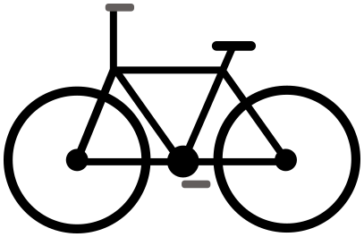
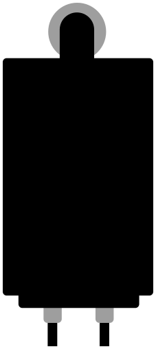

Une entreprise peut réduire les impacts environnementaux d’un produit de différentes manières. On distingue quatre niveaux d’éco-conception, selon l’ampleur des transformations envisagées :
Niveau 1 : optimiser l’existant
On améliore un produit ou un procédé sans en modifier profondément la conception : on réduit la consommation d’énergie, on limite les pertes de matières, on diminue les déchets…
Niveau 2 : repenser la conception
On modifie la composition, la structure ou certains éléments du produit.
Niveau 3 : changer de technologie
On adopte une technologie ou un procédé différent, qui peut transformer profondément le fonctionnement ou la fabrication du produit.
Niveau 4 : changer de modèle économique
On repense la manière dont l’entreprise crée de la valeur et fournit son produit ou son service. Par exemple, on peut passer de la vente d’un équipement à sa location, en conservant la responsabilité de sa maintenance et de sa durée de vie.
Dans un premier temps, analyse chaque situation en répondant au QCM. Puis associe chaque situation au niveau d’éco-conception correspondant, du niveau 1 au niveau 4.

Passer d’une bouteille de lessive liquide de 1 L à une bouteille de lessive 2 fois plus concentrée entraîne :
Passer d’une bouteille de lessive d’1 L à une bouteille de lessive 2 fois plus concentrée demande d’adapter la composition de la lessive pour augmenter sa concentration, tout en conservant des propriétés physiques qui lui permettent de s’écouler facilement. On pourra ainsi diminuer la quantité de packaging pour un même nombre de lessives réalisées : en théorie, 1 L de lessive permettra de faire 2 fois plus de lessives, tout en gardant une bouteille d’1 L.
Le modèle d’affaire reste le même : vendre de la lessive en bouteille. Une innovation technologique pourrait être nécessaire (par exemple, l’ajout d’un additif pour faciliter l’écoulement de la lessive concentrée), mais sans information supplémentaire, la réponse « une innovation technologique particulière » n’est ni vraie ni fausse.
La société WIF’EX a décidé d’éco-concevoir sa box internet, dont 80 % des impacts viennent de la phase d’utilisation, en ajoutant un mode veille et un bouton on/off en cas d’absence prolongée. Ces solutions entraînent :
L’ajout d’un mode veille et d’un bouton on/off a pour objectif de diminuer la consommation d’énergie lors de l’utilisation de la box. Pour accueillir ces évolutions, la structure de la box devra être adaptée.
On pourrait aussi intégrer de nouvelles technologies de composants électroniques pour consommer encore moins, mais en l’absence d’information supplémentaire, la réponse « l’ajout d’une nouvelle technologie de composants électroniques » n’est ni vraie ni fausse.
La société TIROX ne vend plus d’imprimantes directement, mais les loue à ses clients et en assure la maintenance. Cette éco-conception entraîne :
Il s’agit bien ici d’un changement de modèle d’affaire, puisque la société TIROX reste propriétaire de ses imprimantes et en garde la responsabilité : maintenance, réparation, fin de vie.

Une société de livraison a décidé de convertir la motorisation diesel de ses vieux camions en motorisation électrique à batterie (on parle de rétrofit). Cette éco-conception entraîne :
Il faudra modifier en profondeur le camion, en retirant sa chaîne de traction thermique pour la remplacer par une chaîne électrique et en ajoutant une batterie, tout en conservant le châssis et la cabine.
Il ne s’agit pas d’un changement de modèle d’affaire, car la société continue à livrer en camionnette.

Un producteur de fibre textile a investi dans une nouvelle machine de filature électrique, plus efficace énergétiquement, qui permet de limiter les rebuts de production. Cette éco-conception entraîne :
Le producteur a acheté une nouvelle machine de filature, qui lui permet d’optimiser sa production, de réduire sa consommation d’énergie et ses déchets. La composition de sa fibre et son modèle d’affaire restent identiques.

Une entreprise remplace ses chaudières au gaz par des pompes à chaleur électriques, tout en conservant son activité et sa manière de vendre. Quel changement décrit le mieux cette solution ?
L’entreprise adopte une autre technologie pour produire de la chaleur, sans changer son modèle économique. Le gain environnemental dépend notamment de l’efficacité des équipements et de l’origine de l’électricité.

Une entreprise ne vend plus ses vélos, mais propose un service de location avec entretien et réparation inclus. Quelle proposition est la plus juste ?
L’entreprise vend un service d’usage plutôt qu’un vélo. Ce modèle peut encourager la maintenance et l’utilisation prolongée des équipements, mais ses bénéfices doivent être évalués : taux d’utilisation, déplacements liés à la maintenance, renouvellement du parc et durée de vie sont notamment à considérer.
lessive 2 fois plus concentrée
nouvelle machine de filature
location de vélos avec entretien
changer de modèle économique
On repense la manière de créer de la valeur et de fournir le produit ou le service.
changer de technologie
On adopte une technologie ou un procédé différent.
repenser la conception
On modifie la composition, la structure ou certains éléments du produit.
optimiser
On améliore l’existant sans en modifier profondément la conception.
La production de fibre textile optimisée, avec l’achat d’une nouvelle machine de filature plus performante, plus économe en énergie et en rebuts, est un niveau 1 : on optimise l’existant.
La lessive concentrée nécessite un changement de composition : il s’agit d’un niveau 2.
La box internet nécessite un changement de structure : il s’agit d’un niveau 2.
Le rétrofit permet de passer d’une technologie thermique à une technologie électrique : c’est un niveau 3, un changement de technologie.
Le remplacement des chaudières au gaz par des pompes à chaleur est un niveau 3, un changement de technologie.
Le passage d’un modèle où l’imprimante est vendue au client à un modèle où le fabricant reste propriétaire et loue ses imprimantes correspond à un niveau 4.
La location de vélos avec entretien inclus correspond aussi à un niveau 4 : on change de modèle économique.
De l’optimisation d’un produit existant à la transformation de son modèle économique, il existe plusieurs façons d’éco-concevoir.

Mais concrètement, quels leviers peut-on actionner à chaque étape du cycle de vie, et quels outils utiliser pour guider ses choix ? C’est ce que nous allons découvrir dans la suite !